1. In the following diagram of a light wave what distance is defined as the wavelength?
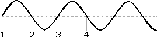
2. Which of the following compounds has three different sets of structurally equivalent hydrogen atoms ?
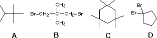
3 Four major spectroscopic tools are listed below. Which makes use of the longest wavelength radiation? A) infrared B) ultraviolet C) visible D) proton nmr
4 You have three dyes. One is green, one is blue and one is yellow Which absorbs the shortest wavelength of visible light, and which absorbs the longest? A) longest = yellow; shortest = blue B) longest = blue; shortest = green C) longest = yellow; shortest = green D) longest = green; shortest = yellow
5 Of the following general statements concerning vibrational frequencies and intensities, which is incorrect.? A) stretching vibrations have a higher frequency than equivalent bending vibrations. B) stretching vibrations of double bonds have a higher frequency than those of equivalent single bonds. C) the stretching vibration of a Y-Y bond is more intense than that of a Y-Z bond. (Y and Z are different atoms) D) stretching vibrations of a Y-H bond have a higher frequency than those of a Y-Z bond. (Y and Z are heavier atoms than H)
6 Which if any of the following compounds will display spin-spin splitting in the 1Hnmr? A) (CH3)3COCH3 B) Br(CH2)3Br C) para-xylene, CH3C6H4CH3 D) none of these
7 The 1Hnmr of 1,1-dibromoethane consists of two well-separated signals, one large and the other small. Which of the following descriptions is correct? A) the large signal is a quartet and the small signal is a doublet. B) the large signal is a triplet and the small signal is a singlet. C) the large signal is a singlet and the small signal is a triplet. D) the large signal is a doublet and the small signal is a quartet.
8 Which spectroscopic tool would be best for distinguising a sample of 1,2,2-trichloropropane from 1,1,2-trichloropropane? A) 1Hnmr B) infrared spectroscopy C) ultraviolet-visible spectroscopy D) mass spectrometry
9 Which spectroscopic tool would be best for distinguising a sample of 1,3-cyclohexadiene from 1,4-cyclohexadiene? A) 1Hnmr B) infrared spectroscopy C) ultraviolet-visible spectroscopy D) mass spectrometry
10 Which spectroscopic tool would be best for distinguising a sample of chlorocyclopentane from bromocyclopentane? A) 1Hnmr B) infrared spectroscopy C) ultraviolet-visible spectroscopy D) mass spectrometry
11 Which spectroscopic tool would be best for distinguising a sample of compound I from compound II?
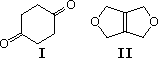
12 Combustion analysis of an organic compound shows it to be 64.3% carbon. It displays a molecular ion at m/z=112 amu in the mass spectrum. Which of the following ia a plausible molecular formula for this compound? A) C8H16 B) C7H12O C) C6H8O2 D) C5H4O3
13 An unknown compound has the following spectroscopic properties: Mass Spectrometry: m/z 102 (very small), 87 & 43 are the largest ions 1Hnmr: δ 1.4 & 3.9 ppm (both singlets, intensity ratio 3:2) 13Cnmr: δ 108, 64 & 25 ppm, Infrared Spectroscopy: several strong absorptions in the 1000 to 1300 cm-1 region Which of the following is the most likely formula of this compound?
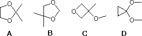
14 Which type of C–H has the highest stretching frequency in the infrared spectrum? A) RCHO B) RCH3 C) R2C=CH2 D) RC≡CH
15 Which C=O function has the lowest stretching frequency in the infrared spectrum? A) acyl chloride B) aldehyde C) amide D) ester
16 Which hydrocarbon gives the lowest field 1Hnmr signal? A) cyclohexane B) benzene C) 1,4-cyclohexadiene D) 1-butyne
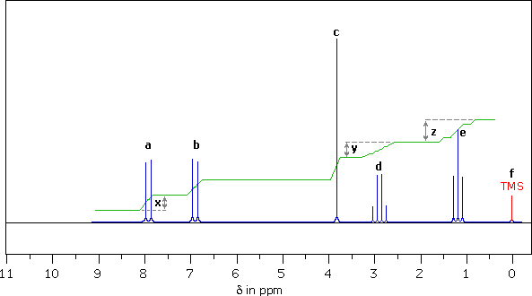
17 Of all six signal groups in this spectrum, what is the multiplicity of the lowest field signal? A) singlet B) doublet C) triplet D) quartet
18 Which of the six signal groups in this spectrum is located at the highest frequency? A) a B) c C) e D) f
19 How far from the TMS reference signal is the singlet at c (δ 3.8 ppm)? A) 23.7 Hz B) 23.7 MHz C) 342 Hz D) 342 MHz
20 The two sharp signals that constitute the resonance marked a have chemical shifts of 7.82 and 7.95 What is the coupling constant, J, for this doublet? A) 0.13 MHz B) 11.7 Hz C) 11.7 MHz D) 13 Hz
21 Which of the six signal groups in this spectrum is most shielded? A) a B) c C) e D) f
22 Ignoring the TMS reference signal what, is the mutiplicity of the highest field signal? A) singlet B) doublet C) triplet D) quartet
23 The ratio of the number of hydrogens generating doublet a to the hydrogens generating quartet d is measued how? A) x/y (distance in mm) B) 7.88/2.85 (chemical shifts in ppm) C) x/z (distance in mm) D) none of the above
24 If this spectrum is from a C10H12O2 compound, having a strong absorption at 1680 cm-1 in the infrared, what is its likely structure?
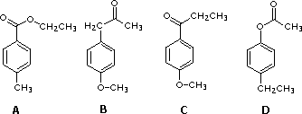
25 Which statement about the nmr reference compound TMS is not correct? A) TMS stands for tetramethylsilane. B) all the hydrogens in TMS have the same chemical shift. C) TMS is relatively unreactive with most functional groups. D) TMS has a high boiling point, so it is not easily lost when handling the nmr sample.
26 A C2H2BrCl compound gives a 1Hnmr spectrum consisting of two equal sized doublets, J=16 Hz What is this compound? A) (Z)-1-bromo-2-chloroethene B) (E)-1-bromo-2-chloroethene C) 1-bromo-1-chloroethene D) none of the above
27 The 1Hnmr spectrum of diethyl ether shows? A) two peaks, one a triplet, the other a quartet B) two peaks, one a triplet, the other a doublet C) four peaks, all doublets D) four peaks, all triplets
28 Compared with a conjugated diene, the UV-visible absorption spectrum of a conjugated triene will change in which way? A) the λmax will increase and the ε will decrease B) the λmax will decrease and the ε will increase C) both the λmax and the ε will decrease D) both the λmax and the ε will increase
29 The conjugated diene, 1,3-cyclohexadiene, has four π-molecular orbitals. In order of increasing energy these are: π1, π2, π3 and π4. Which of these is the HOMO of the electronic ground state? A) π1 B) π2 C) π3 D) π4
30 The 1Hnmr spectrum of a C6H8 hydrocarbon displays a single sharp signal. The 13Cnmr spectrum has two resonance signals. Which of the following compounds would fit this evidence?
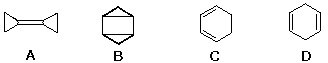
31 Consider four C3H5Cl3 isomers. Which has two 1Hnmr singlets and three 13Cnmr signals? A) CH3CH2CCl3 B) CH2ClCHClCH2Cl C) CH3CHClCHCl2 D) CH3CCl2CH2Cl
32 Consider four C3H6Cl2 isomers. Select those compounds having two 13Cnmr signals. Which of these displays no molecular ion in the mass spectrum, but has ions at 99 & 101 m/z as well as 77 & 79 m/z ( ratio of lower to higher mass is 3:1 in each case)? A) CH3CCl2CH3 B) CH3CH2CHCl2 C) CH2ClCH2CH2Cl D) CH3CHClCH2Cl
33 Four C10H14 isomers are named below. Which of these would display the following 1Hnmr signals? δ 1.22 (t) 6H , δ 2.60 (q) 4H , δ 7.12 (s) 4H ( s=singlet, d=doublet, t=triplet, q=quartet, ,m=multiplet ) A) tert-butylbenzene. B) isobutylbenzene. C) para-diethylbenzene. D) 1,2,3,4-tetramethylbenzene.
34 Four C10H14 isomers are named below. Which of these would display the following 1Hnmr signals? δ 2.18 (s) 12H , δ 6.88 (s) 2H ( s=singlet, d=doublet, t=triplet, q=quartet, ,m=multiplet ) A) tert-butylbenzene. B) 1,2,4,5-tetramethylbenzene. C) 1,2,3,5-tetramethylbenzene. D) 1,2,3,4-tetramethylbenzene.
35 An unknown compound has a molecular ion at m/z=79 amu in its mass spectrum. Analysis shows its composition to be 17.7% nitrogen. What is the molecular formula of this compound? A) C5H5N. B) C4H3N2. C) C3HN3. D) C4H17N..
36 The infrared spectrum of a hydrocarbon has a strong absorption at 3297 cm-1. What structural feature does this indicate? A) sp3 C–H B) sp2 C–H C) sp C–H D) C≡C
37 Four C10H14 isomers are named below. Which of these would display the following 1Hnmr signals? δ 0.88 (d) 6H , δ 1.86 (m) 1H , δ 2.45 (d) 2H , δ 7.2-7.3 (s) 5H ( s=singlet, d=doublet, t=triplet, q=quartet, ,m=multiplet ) A) para-isopropyltoluene. B) isobutylbenzene. C) sec-butyllbenzene. D) meta-diethylbenzene.
38 Two isomeric C8H10 hydrocarbons (A & B) both give the same C8H14 saturated hydrocarbon product on exhaustive catalytic hydrogenation. Both A & B show strong UV absorption at λmax = 245 nm, and addition of one equivalent of HBr to either A or B produces the same mixture of C8H13Br isomers.
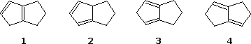
39 Neopentyl chloride, (CH3)3CCH2Cl, reacts with the strong base sodium amide to form a new compound This compound has a molecular ion at m/z = 70 amu, and displays two 1H nmr singlets at δ 0.20 & 1.05 ppm (intensity ratio = 2:3) What is a plausible structure for this compound ? A) 2-methyl-2-butene B) 1,1-dimethylcyclopropane C) methylcyclobutane D) cyclopentane
40 A compound has a molecular ion at m/z = 142 amu, and displays only one 1H nmr signal (a sharp singlet). Which of the following satisfies these facts? A) methyl iodide B) 1,1,2,2-tetra fluorocyclopentane C) para-disulfhydrylbenzene [C6H4(SH)2] D) 2,4-hexadiyne-1,6-diol
41 Which of the following statements is the best definition of the base peak in a mass spectrum? A) the molecular ion peak B) the lowest m/z peak C) the highest mass rearrangement ion D) the ion peak of greatest intensity
42 Assuming all the compounds listed below yield an observable molecular ion, which would have an odd number m/z value for this ion? A) C9H15F B) C7H10N2O C) C8H10NI D) all the above have odd mass molecular ions
43 The mass spectrum of 3-pentanone has a very large ion peak at m/z = 57. Which of the following ions is thought to be responsible for this peak?
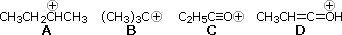
44 Four methyl compounds are listed below. Which has the lowest field methyl resonance in the 1H nmr spectrum? A) (CH3)4Si B) (CH3)3N C) (CH3)2S D) (CH3)2O
45 The following hydrocarbons all have 1H nmr spectra consisting of a single sharp peak Which exhibits the greatest shielding? A) 2-butyne B) benzene C) 1,2,3-butatriene D) 1,3-butadiyne
46 Infrared spectroscopy examines energy excitations in which of the following ranges? A) 0.01 to 0.1 kcal/mol B) 1 to 10 kcal/mol C) 10 to 50 kcal/mol D) 50 to 100 kcal/mol
47 A C5H12O2 compound has strong infrared absorption at 3300 to 3400 cm-1. The 1H NMR spectrum has three singlets at δ 0.9 , δ3.45 and δ3.2 ppm; relative areas 3:2:1. Addition of D2O to the sample eliminates the lower field signal. The 13C NMR spectrum shows three signals all at higher field than δ100 ppm. Which of the following compounds best fits this data? A) 1,5-pentanediol B) 1,3-dimethoxypropane C) 2,2-dimethyl-1,3-propanediol D) 2,4-pentanediol
48 A C7H14O compound has a strong infrared absorption at 1715 cm-1. The 1H NMR spectrum consists of two signal groups: δ 1.10 ppm (d) and δ 2.77 (m), ratio 6:1. The 13C NMR spectrum shows three lines at δ218, 39 and 18 ppm. Which of the following compounds best fits this data?
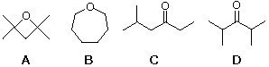
49 A C9H12O3 compound has two strong infrared absorptions between 1100 and 1250 cm-1 and at 1600 cm-1. The 1H NMR spectrum has sharp singlet peaks at δ 3.6 and 6.6 ppm (intensity ratio 3:1). The 13C NMR spectrum shows three lines at δ 165, 115 and 55 ppm. Which of the following compounds best fits this data? A) 1,3,5-trimethoxybenzene B) 1,2,3-trimethoxybenzene C) 2,4,6-trimethyl-1,3,5-benzenetriol D) 1-phenyl-1,2,3-propanetriol
50 An unknown compound displays a molecular ion at m/z = 83 amu The 13C NMR spectrum shows three lines at δ 126, 28.5 and 28.1 ppm. The infrared spectrum shows a sharp strong absorption at 2235 cm-1. Which of the following compounds best fits this data?
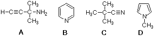
51 An infrared spectrum has a strong absorption at 5.85 μ. Which of the following frequencies corresponds to this wavelength? A) 3300 cm-1 B) 1710 cm-1 C) 1200 cm-1 D) 890 cm-1
52 Which of the following statements is not correct.? A) frequencies in cm-1 are much smaller numbers than frequencies in Hz B) wavelengths in μ are smaller numbers than wavelengths in Å C) frequency varies inversely with wavelength D) wavelengths given in nm are larger numbers than wavelengths in Å
53 Which of the following trienes will have the longest wavelength absorption in the ultraviolet?
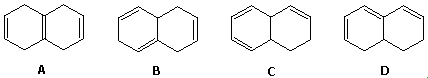
54 Which of the following trienes will have the simplest 1Hnmr spectrum?